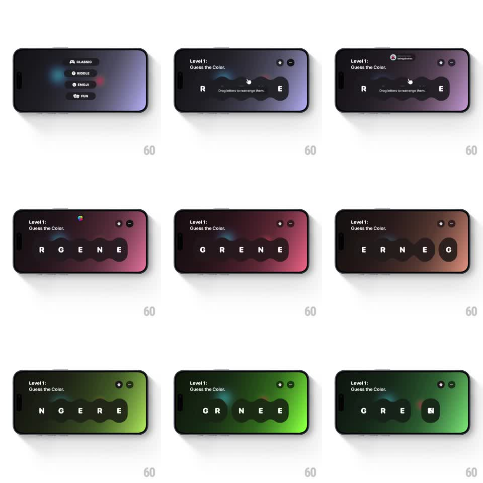

Media
Frame-by-frame

Rebuild this interaction 1:1: Letter Flow's word puzzle - letters sit on dark rounded tiles; dragging a tile makes it stretch and squish like liquid, neighbors slide aside to make room, the background hue shifts with progress, and solving the word (GREEN) triggers a confetti celebration.

Rebuild this interaction 1:1: Letter Flow's word puzzle - letters sit on dark rounded tiles; dragging a tile makes it stretch and squish like liquid, neighbors slide aside to make room, the background hue shifts with progress, and solving the word (GREEN) triggers a confetti celebration. ## Integration Integration: stack-agnostic spec - springs given as stiffness/damping, timed motions as duration + curve; map every value to your framework and animation library of choice. ## Scene Landscape game screen: "Level 1: Guess the Color." top-left, home and options buttons top-right, and a centered row of dark pill-shaped letter tiles (R G E N E scrambled) with the hint "Drag letters to rearrange them.". The background gradient shifts hue (violet -> rose -> green) as the arrangement nears the solution. ## Motion spec Pattern: liquid drag-and-drop sorting with reactive background. - Pickup: the grabbed tile lifts (scale 1.08, shadow deepens, 120ms) and follows the finger 1:1 with a slight lag-stretch in the drag direction (squash-and-stretch, max 8%). - Reflow: tiles between old and new positions slide aside with springs (~380/22, 250ms) as the dragged tile passes their centers. - Drop: the tile settles into its slot with a soft bounce (scale 1.05 -> 1, 180ms); the whole row does a tiny settle jiggle. - Reactive background: the gradient hue interpolates toward green as correctly placed letters increase (continuous, mapped to progress). - Solve: when the word completes, tiles do a sequential jump (60ms stagger, spring ~360/16) and confetti bursts from the row (50+ pieces, gravity + flutter, ~1.5s). ## Calibration - The dragged tile renders above siblings; z-order restores on drop. - Background hue is progress-driven, not time-driven - undoing a letter cools it back down. ## Reduced motion Tiles swap positions with 150ms fades; solve state fades in without confetti. ## Don't miss - Tiles are squishy throughout the drag - rigid movement kills the liquid feel. - The level label and hint stay fixed; only tiles and background react.